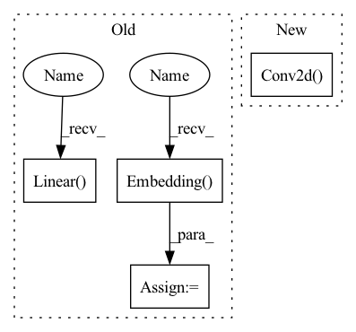

Pattern ID :1174

Before Change
self.content_embedding = nn.Embedding(config["n_imgs"], config["content_dim"])
self.style_embedding = nn.Embedding(config["n_imgs"], config["style_dim"])
self.class_embedding = nn.Embedding(config["n_classes"], config["class_dim"])
self.class_style_modulation = nn.Sequential(
nn.Linear(in_features=config["class_dim"] + config["style_dim"], out_features=config["class_dim"]),
nn.LeakyReLU(negative_slope=0.2),
nn.Linear(in_features=config["class_dim"], out_features=config["class_dim"]),
After Change
self.config = config
self.from_rgb = nn.Sequential(
nn.Conv2d(in_channels=3, out_channels=256, kernel_size=3, stride=1, padding=1)
)
self.encoder = nn.Sequential(
ResBlk(dim_in=256, dim_out=512, normalize=True, downsample=True),
In pattern: SUPERPATTERN
Frequency: 3
Non-data size: 4
Instances
Fragment ID: 3385123
Project Name: avivga/overlord
Commit Name: fa020664bf0dcbd11e72953117146be2cdbc3b48
Time: 2020-05-29
Author: avivga@gmail.com
File Name: model/modules.py
M Class Name: Generator
N Class Name: Generator
M Method Name: __init__(2)
N Method Name: __init__(2)
M Parent Class: nn.Module
N Parent Class: nn.Module
M File Name: model/modules.py
N File Name: model/modules.py
M Start Line: 17
M End Line: 32
N Start Line: 17
N End Line: 49
'>
Before Change
self.convs = nn.Sequential(*layers)
self.linear = nn.Linear(
in_features=self.config["discriminator"]["filters"] * (2 ** (self.config["discriminator"]["n_layers"] - 1)),
out_features=1
)
self.class_embedding = nn.Embedding(
num_embeddings=config["n_classes"],
embedding_dim=self.config["discriminator"]["filters"] * (2 ** (self.config["discriminator"]["n_layers"] - 1))
)
def forward(self, img, class_id):
x = self.convs(img)
h = torch.sum(x, dim=[2, 3])
After Change
]
layers += [
nn.Conv2d(in_channels=out_channels, out_channels=1, kernel_size=1, stride=1)
]
self.convs = nn.Sequential(*layers)
'>
Fragment ID: 3385121
Project Name: avivga/overlord
Commit Name: 133e6119f47602201eda49d6c008567bc9724579
Time: 2020-05-14
Author: avivga@gmail.com
File Name: model/modules.py
M Class Name: Discriminator
N Class Name: Discriminator
M Method Name: __init__(2)
N Method Name: __init__(2)
M Parent Class: nn.Module
N Parent Class: nn.Module
M File Name: model/modules.py
N File Name: model/modules.py
M Start Line: 180
M End Line: 188
N Start Line: 168
N End Line: 181
'>
Before Change
self.content_embedding = nn.Embedding(config["n_imgs"], config["content_dim"])
self.style_embedding = nn.Embedding(config["n_imgs"], config["style_dim"])
self.class_embedding = nn.Embedding(config["n_classes"], config["class_dim"])
self.class_style_modulation = nn.Sequential(
nn.Linear(in_features=config["class_dim"] + config["style_dim"], out_features=config["class_dim"]),
nn.LeakyReLU(negative_slope=0.2),
nn.Linear(in_features=config["class_dim"], out_features=config["class_dim"]),
nn.LeakyReLU(negative_slope=0.2)
)
After Change
self.config = config
self.from_rgb = nn.Sequential(
nn.Conv2d(in_channels=3, out_channels=256, kernel_size=3, stride=1, padding=1)
)
self.encoder = nn.Sequential(
ResBlk(dim_in=256, dim_out=512, normalize=True, downsample=True),
'>
Fragment ID: 3385124
Project Name: avivga/overlord
Commit Name: fa020664bf0dcbd11e72953117146be2cdbc3b48
Time: 2020-05-29
Author: avivga@gmail.com
File Name: model/modules.py
M Class Name: Generator
N Class Name: Generator
M Method Name: __init__(2)
N Method Name: __init__(2)
M Parent Class: nn.Module
N Parent Class: nn.Module
M File Name: model/modules.py
N File Name: model/modules.py
M Start Line: 17
M End Line: 32
N Start Line: 17
N End Line: 49
'>
Before Change
self.input_path = nn.ModuleList([
LinearBlock(in_features=latent_dimensions, out_features=256, feature_size=365),
LinearBlock(in_features=256, out_features=256, feature_size=4096),
nn.Sequential(spectral_norm(nn.Linear(in_features=256, out_features=int(512 // channels_factor) * 4 * 4)),
nn.LeakyReLU(negative_slope=0.2))
])
// Init main residual path
self.main_path = nn.ModuleList([
GeneratorResidualBlock(in_channels=int(512 // channels_factor), out_channels=int(512 // channels_factor),
feature_channels=513, number_of_classes=number_of_classes),
GeneratorResidualBlock(in_channels=int(512 // channels_factor), out_channels=int(512 // channels_factor),
feature_channels=513, number_of_classes=number_of_classes),
GeneratorResidualBlock(in_channels=int(512 // channels_factor), out_channels=int(256 // channels_factor),
feature_channels=257, number_of_classes=number_of_classes),
SelfAttention(channels=int(256 // channels_factor)),
GeneratorResidualBlock(in_channels=int(256 // channels_factor), out_channels=int(128 // channels_factor),
feature_channels=129, number_of_classes=number_of_classes),
GeneratorResidualBlock(in_channels=int(128 // channels_factor), out_channels=int(64 // channels_factor),
feature_channels=65, number_of_classes=number_of_classes)
])
// Init final block
self.final_block = nn.Sequential(
nn.UpsamplingBilinear2d(scale_factor=2),
spectral_norm(nn.BatchNorm2d(int(64 // channels_factor))),
spectral_norm(nn.Conv2d(in_channels=int(64 // channels_factor), out_channels=int(64 // channels_factor),
kernel_size=(3, 3), stride=(1, 1), padding=(1, 1), bias=False)),
nn.LeakyReLU(negative_slope=0.2),
spectral_norm(
nn.Conv2d(in_channels=int(64 // channels_factor), out_channels=out_channels, kernel_size=(1, 1),
stride=(1, 1), padding=(0, 0), bias=False))
)
// Init embedding layer for label
self.embedding = nn.Embedding(num_embeddings=number_of_classes, embedding_dim=number_of_classes)
def forward(self, input: torch.Tensor, features: List[torch.Tensor],
masks: List[torch.Tensor] = None, class_id: torch.Tensor = None) -> torch.Tensor:
"""
After Change
self.linear_block_1 = LinearBlock(in_features=latent_dimensions, out_features=365, feature_size=365)
self.linear_block_2 = LinearBlock(in_features=365, out_features=2048, feature_size=4096)
self.convolution_layer = spectral_norm(
nn.Conv2d(in_channels=128, out_channels=int(512 // channels_factor), kernel_size=(1, 1), padding=(0, 0),
stride=(1, 1), bias=True))
// Init main residual path
self.main_path = nn.ModuleList([
GeneratorResidualBlock(in_channels=int(512 // channels_factor), out_channels=int(512 // channels_factor),
'>
Fragment ID: 3385117
Project Name: christophreich1996/semantic_pyramid_for_image_generation
Commit Name: 8d56a34edd21d5874a8d45af97eba926a6f171c0
Time: 2021-03-29
Author: 34400551+ChristophReich1996@users.noreply.github.com
File Name: models.py
M Class Name: Generator
N Class Name: Generator
M Method Name: __init__(5)
N Method Name: __init__(5)
M Parent Class: nn.Module
N Parent Class: nn.Module
M File Name: models.py
N File Name: models.py
M Start Line: 28
M End Line: 60
N Start Line: 28
N End Line: 61